DEMO_volumetric_SED_eval
This demo was developed as part of the paper: Moerman et al. "Novel Hyperelastic Models for Large Volumetric Deformations".
The demo features: * Implementations of hyperelastic volumetric strain energy density functions (SEDs) * Visualizations of the SED, hydrostatic stress, and tangent as a function of the volume ratio.
Contents
Keywords
- Strain energy density
- Volumetric
- Visualization
clear; close all; clc;
Plot settings
fontSize=36; fontSizeInner=fontSize+15; fontSizeLabel=fontSize+30; plotColors=gjet(4); plotColors=plotColors([1 2 4],:); lineWidth=6; gridAlpha=0.3; LineWidthAxis=2; legendHeight=0.05; numXTicks=5;
Control parameters
formulationCases=1:12; %Choose formulation 1:12 k=1; %Default bulk modulus (except for hyperfoam) J_max=2; numPoints=2000; %Number of points for plotting J=linspace(0.1,J_max,numPoints)'; %The volume ratios xtickRange=linspace(0,max(J),numXTicks); %X-axis tick range
Get or set formulation specific data and parameters
for formulationCase=formulationCases
switch formulationCase case 1 %Hencky formulationName='Hencky'; parSet(1)=k; %Bulk modulus case 2 %Simo formulationName='Simo'; parSet(1)=k; %Bulk modulus case 3 %Bischoff formulationName='Bischoff'; b=2; %Beta parSet(1)=k; %Bulk modulus parSet(2)=b; %Beta case 4 %Modified Ogden formulationName='Modified Ogden'; b=2;%Beta parSet(1)=k; %Bulk modulus parSet(2)=b; %Beta case 5 %Hyperfoam formulationName='Hyperfoam'; mu=1; a=2; %Alpha b=2; %Beta parSet(1)=mu; %Mu parSet(2)=a; %Alpha parSet(3)=b; %Beta case 6 %Doll and Schweizerhoff formulationName='Doll and Schweizerhoff'; a=3; %Alpha b=2; %Beta parSet(1)=k; %Bulk modulus parSet(2)=a; %Alpha parSet(3)=b; %Beta case 7 %Moerman 1 formulationName='Moerman 1'; b1=3; b2=2; parSet(1)=k; %Bulk modulus parSet(2)=b1; %Alpha parSet(3)=b2; %Beta case 8 %Moerman 1A formulationName='Moerman 1A'; b1=3; b2=2; q=0.5; parSet(1)=k; %Bulk modulus parSet(2)=b1; %Alpha parSet(3)=b2; %Beta parSet(4)=q; %Weigthing factor case 9 %Moerman 1B formulationName='Moerman 1B'; b1=3; b2=2; parSet(1)=k; %Bulk modulus parSet(2)=b1; %Alpha parSet(3)=b2; %Beta case 10 %Moerman 2 formulationName='Moerman 2'; J1=max(J)+0.1; J2=0; parSet(1)=k; %Bulk modulus parSet(2)=J1; %J1 parSet(3)=J2; %J2 case 11 %Moerman 2A formulationName='Moerman 2A'; b1=3; b2=2; parSet(1)=k; %Bulk modulus parSet(2)=b1; %Alpha parSet(3)=b2; %Beta case 12 %Moerman 3 formulationName='Moerman 3'; J1=max(J)+0.1; J2=0; s1=0.15; s2=0.15; q1=0.9; q2=0.9; parSet(1)=k; %Bulk modulus parSet(2)=J1; %J1 parSet(3)=J2; %J2 parSet(4)=s1; %s1 parSet(5)=s2; %s2 parSet(6)=q2; %q1 parSet(7)=q2; %q2 end
Calculate SED
%Get normalized SED
[W,S,T]=SED_eval(formulationCase,parSet,J);
Visualize data
hf=cFigure;
ht=suptitle(formulationName);
ht.FontSize=fontSizeLabel;
ht.Interpreter='latex';
subplot(1,3,1); hold on;
set(gca,'FontSize',fontSize,'LineWidth',LineWidthAxis,'GridAlpha',gridAlpha);
xlabel('$J$','FontSize',fontSizeLabel,'Interpreter','latex');
ylabel('$\Psi/\kappa$','FontSize',fontSizeLabel,'Interpreter','latex');
hp1=plot(J,W,'k-','LineWidth',lineWidth);
hp1.Color=plotColors(1,:);
grid on; axis tight; axis square; box on;
xlim([0 max(J(:))]);
set(gca,'XTick',xtickRange);
subplot(1,3,2); hold on;
set(gca,'FontSize',fontSize,'LineWidth',LineWidthAxis,'GridAlpha',gridAlpha);
xlabel('$J$','FontSize',fontSizeLabel,'Interpreter','Latex');
ylabel('$\sigma_{h}/\kappa$','FontSize',fontSizeLabel,'Interpreter','Latex');
grid on; axis tight; axis square; box on;
hp2=plot(J,S,'k-','LineWidth',lineWidth);
hp2.Color=plotColors(2,:);
grid on; axis tight; axis square; box on;
xlim([0 max(J(:))]);
set(gca,'XTick',xtickRange);
subplot(1,3,3); hold on;
set(gca,'FontSize',fontSize,'LineWidth',LineWidthAxis,'GridAlpha',gridAlpha);
xlabel('$J$','FontSize',fontSizeLabel,'Interpreter','latex');
ylabel('$\frac{\partial^2 \Psi}{\partial J^2} /\kappa$','FontSize',fontSizeLabel,'Interpreter','Latex');
hp3=plot(J,T,'k-','LineWidth',lineWidth);
hp3.Color=plotColors(3,:);
grid on; axis tight; axis square; box on;
xlim([0 max(J(:))]);
ylim([0 max(T(:))]);
set(gca,'XTick',xtickRange);
drawnow;
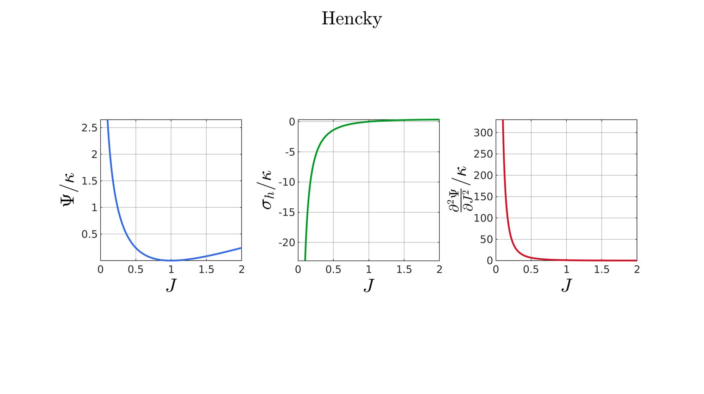 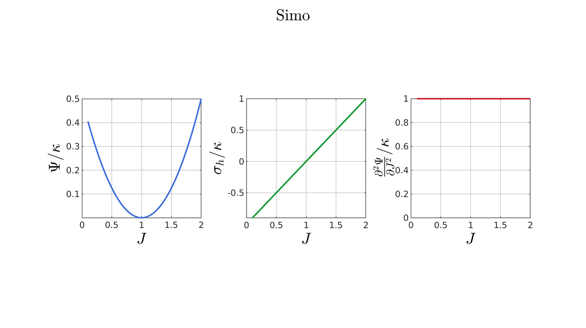 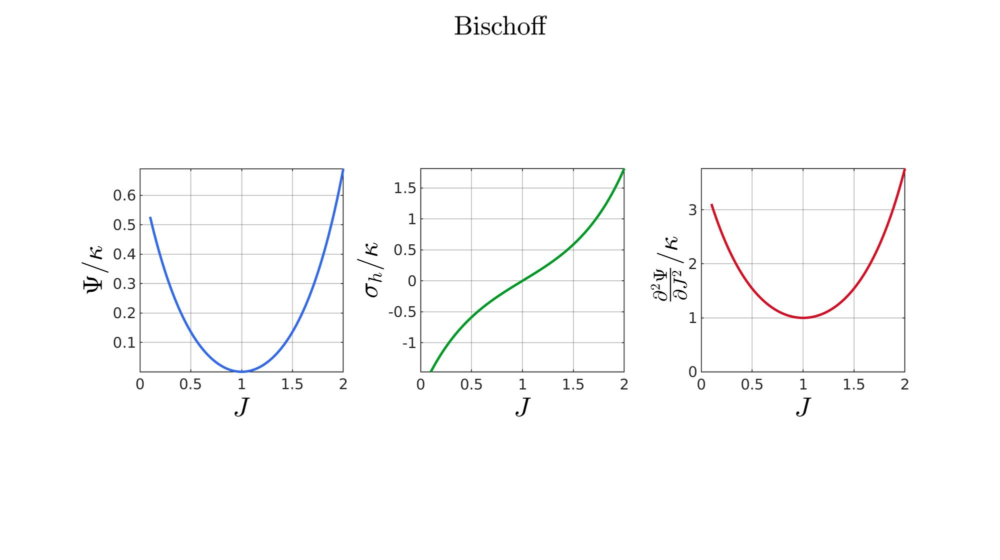 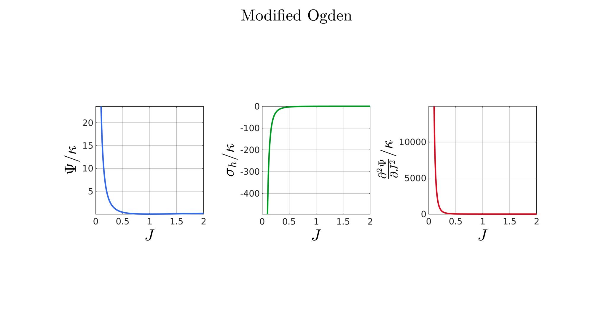 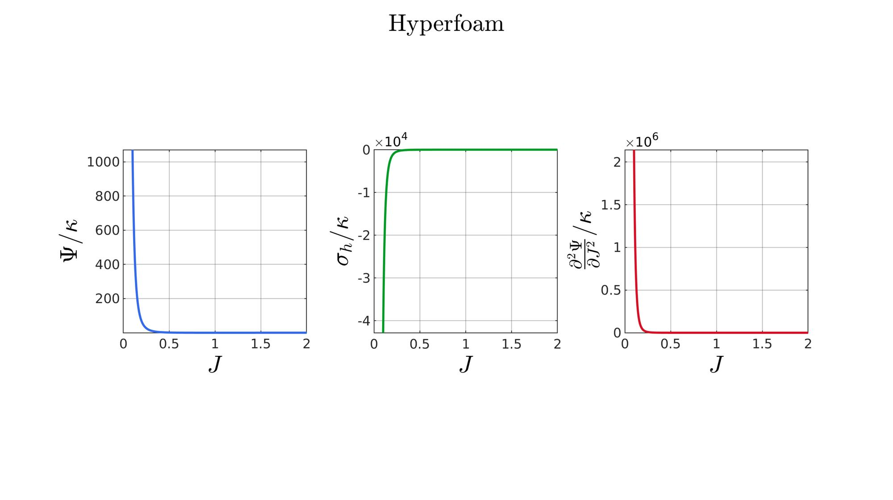 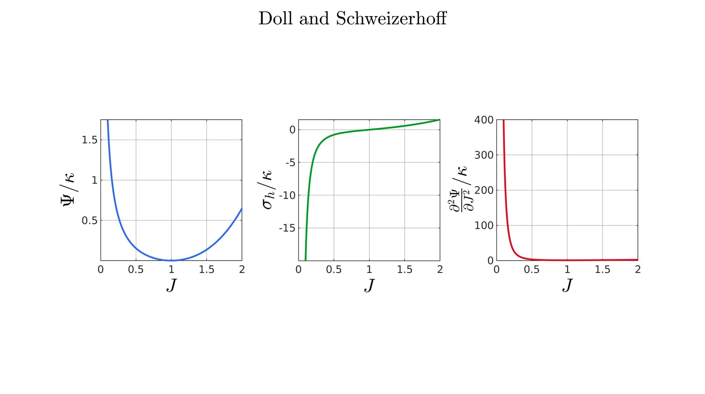 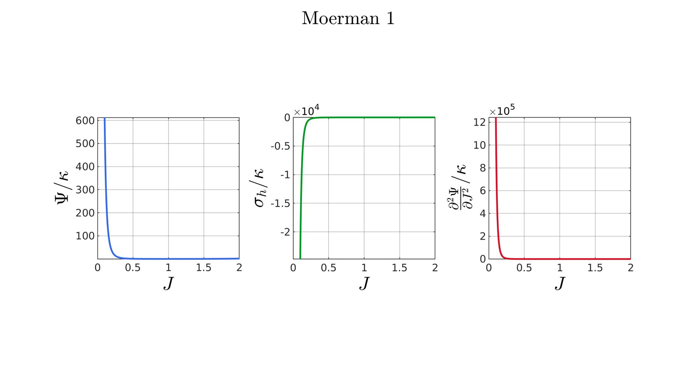 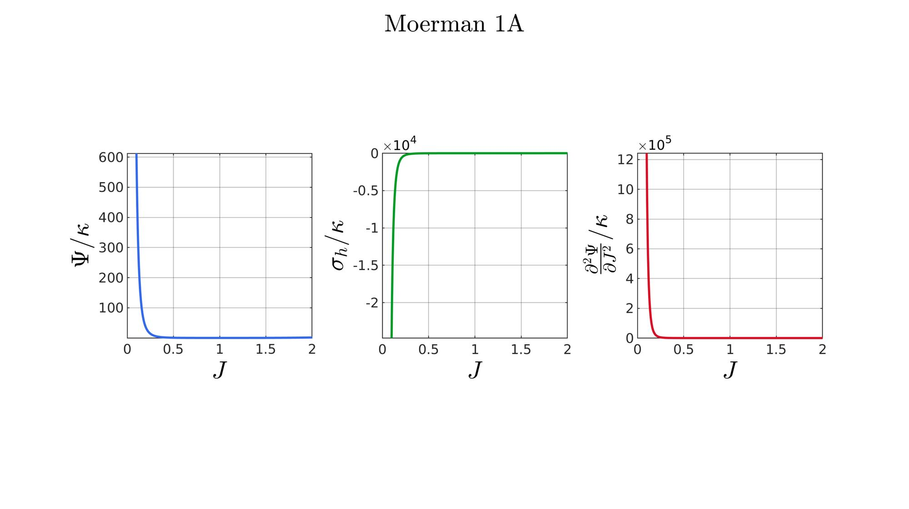 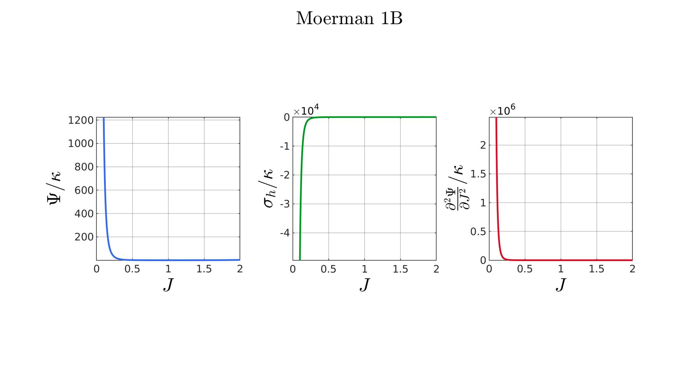 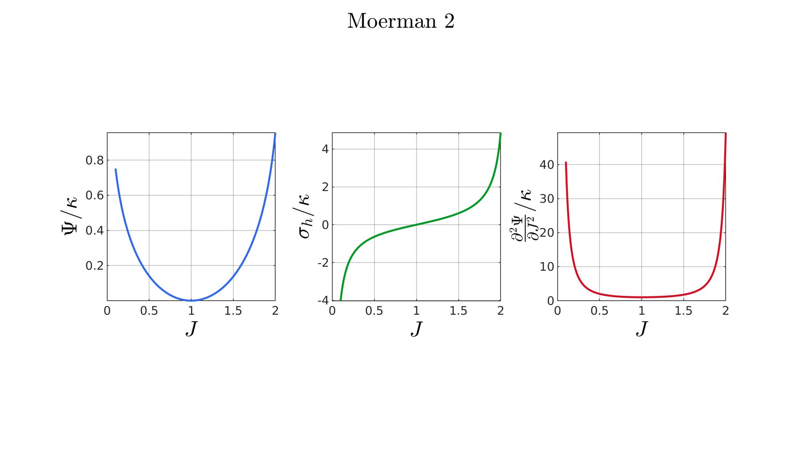 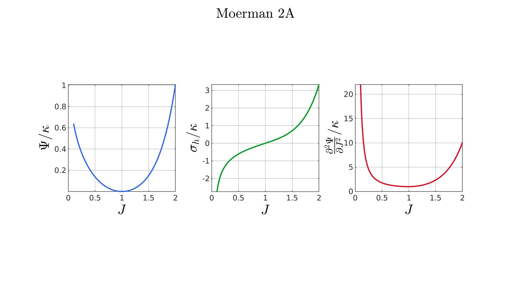 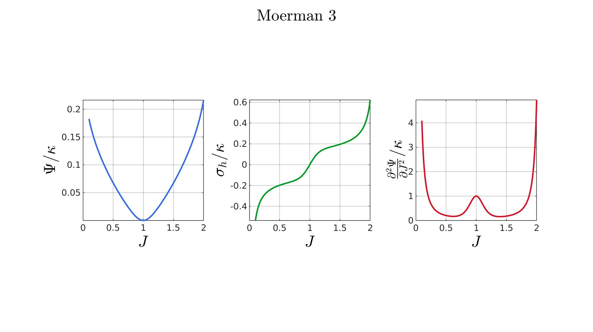 end
Evaluate SED
function [W,S,T]=SED_eval(formulationCase,parSet,J) switch formulationCase case 1 %Hencky k=parSet(1); W=k/2*log(J).^2; S=k*log(J)./J; T=(k-k*log(J))./J.^2; case 2 %Simo k=parSet(1); W=(k/2).*(J-1).^2; S=(k/2).*(2*J-2); T=k*ones(size(J)); case 3 %Bischoff k=parSet(1); b=parSet(2); W=(k./b.^2).*(cosh(b*(J-1))-1); S=(k./b) .* sinh(b*(J-1)); T=k .* cosh(b*(J-1)); case 4 %Modified Ogden k=parSet(1); b=parSet(2); W=(k./b.^2).*(J.^-b - 1 + b.*log(J)); S=(k./b) .*(1./J - J.^(-b-1)); T=(k./b) .*(-1./J.^2 + (b+1).*J.^(-b-2)); case 5 %Hyperfoam mu=parSet(1); a=parSet(2); b=parSet(3); k=mu.*(b+1/3); W=(2*mu./(a.^2)).*( 3*(J.^(a/3)-1)... +(1./b.*( (J.^(-a.*b))-1 )) ); S=(1./J).*(2*mu./a).*(J.^(a/3)... -J.^(-a.*b) ); T=(1./(J.^2)).*(2*mu/a).*((a./3-1).*J.^(a./3) +... (a.*b+1).*J.^(-a*b) ); case 6 %Doll and Schweizerhoff k=parSet(1); a=parSet(2); b=parSet(3); W=( (k/(a+b)).*( ((1/(a+1)).*(J.^(a+1))) + ((1/(b-1)).*(J.^(-b+1)))) )... -(k.*(1/(a+1)).*(1/(b-1))); S=(k/(a+b)).*(J.^a-J.^(-b)); T=(k/(a+b)).*(a*J.^(a-1)+b*J.^(-b-1)); case 7 %Moerman 1 k=parSet(1); b1=parSet(2); b2=parSet(3); W=(k/4) .*( (1/b1^2).*((J.^ b1)-1).^2 + ... (1/b2^2).*((J.^-b2)-1).^2 ); S=(k/2)./J .*( (1/b1 ).*(J.^( 2*b1) - J.^b1 ) - ... (1/b2 ).*(J.^(-2*b2) - J.^-b2) ); T=(k/2)./J.^2.*( ((2-1/b1)*J.^( 2*b1)-(1-1/b1)*J.^b1) + ... ((2+1/b2)*J.^(-2*b2)-(1+1/b2)*J.^-b2) ); case 8 %Moerman 1A k=parSet(1); b1=parSet(2); b2=parSet(3); q=parSet(4); W1=(k/(2*b1^2)).*( q).*((J.^ b1)-1).^2; W2=(k/(2*b2^2)).*(1-q).*((J.^-b2)-1).^2; W=W1+W2; S1= (k/b1)./J.*( q).*(J.^( 2*b1)-J.^b1 ); S2=-(k/b2)./J.*(1-q).*(J.^(-2*b2)-J.^-b2); S=S1+S2; T1=(k./J.^2).*( q).*((2-1/b1)*J.^( 2*b1)-(1-1/b1)*J.^b1 ); T2=(k./J.^2).*(1-q).*((2+1/b2)*J.^(-2*b2)-(1+1/b2)*J.^-b2); T=T1+T2; case 9 %Moerman 1B k=parSet(1); b1=parSet(2); b2=parSet(3); L1=(J>=1); L2=(J<1); W=zeros(size(J)); W(L1)=(k/(2*b1^2)).*((J(L1).^ b1)-1).^2; W(L2)=(k/(2*b2^2)).*((J(L2).^-b2)-1).^2; S=zeros(size(J)); S(L1)= (k/b1).*(J(L1).^( 2*b1-1)-J(L1).^( b1-1)); S(L2)=-(k/b2).*(J(L2).^(-2*b2-1)-J(L2).^(-b2-1)); T=zeros(size(J)); T(L1)=(k/b1).*((2*b1-1)*J(L1).^( 2*b1-2)-(b1-1)*J(L1).^( b1-2)); T(L2)=(k/b2).*((2*b2+1)*J(L2).^(-2*b2-2)-(b2+1)*J(L2).^(-b2-2)); case 10 %Moerman 2 k=parSet(1); J1=parSet(2); J2=parSet(3); a1=(2/pi)*(J1-1); a2=(2/pi)*(J2-1); W1=(-k*a1.^2)*log(cos((J-1)/a1)); W2=(-k*a2.^2)*log(cos((J-1)/a2)); W=zeros(size(W1)); W(J>=1)=W1(J>=1); W(J<1)=W2(J<1); W=real(W); W(J>=J1)=inf; W(J<=J2)=inf; S1=(k.*a1).*tan((J-1)/a1); S2=(k.*a2).*tan((J-1)/a2); S=zeros(size(S1)); S(J>=1)=S1(J>=1); S(J<1)=S2(J<1); S(J>=J1)=inf; S(J<=J2)=-inf; T1=k*sec((J-1)/a1).^2; T2=k*sec((J-1)/a2).^2; T=zeros(size(T1)); T(J>=1)=T1(J>=1); T(J<1)=T2(J<1); T(J>=J1)=inf; T(J<=J2)=inf; case 11 %Moerman 2A k=parSet(1); b1=parSet(2); b2=parSet(3); W1=(k./b1.^2).*(cosh(b1*(J-1))-1); S1=(k./b1) .* sinh(b1*(J-1)); T1=k .* cosh(b1*(J-1)); W2=(k./b2.^2).*(cosh(b2*(J-1))-1); S2=(k./b2) .* sinh(b2*(J-1)); T2=k .* cosh(b2*(J-1)); W3=k.*(-4/pi^2) .*log(cos(pi/2*(1-J))); S3=k.*(-2/pi) .*tan(pi/2*(1-J)); T3=k .*sec(pi/2*(1-J)).^2; W=W1; S=S1; T=T1; W(J<1)=W2(J<1)/2+W3(J<1)/2; S(J<1)=S2(J<1)/2+S3(J<1)/2; T(J<1)=T2(J<1)/2+T3(J<1)/2; case 12 %Moerman 3
k=parSet(1);
J1=parSet(2);
J2=parSet(3);
s_1=parSet(4);
s_2=parSet(5);
q1=parSet(6);
q2=parSet(7);
L=J<1;
% PART 1
a1=(pi/2)*(1/(J1-1));
a2=(pi/2)*(1/(J2-1));
%SED
W11=(-1/a1.^2)*log(cos((J-1).*a1));
W21=(-1/a2.^2)*log(cos((J-1).*a2));
W1=zeros(size(J));
W1(~L)=W11(~L);
W1(L)=W21(L);
W1=real(W1);
W1(J>J1)=inf;
W1(J<J2)=inf;
%Stress
S11=(1./a1).*tan((J-1).*a1);
S21=(1./a2).*tan((J-1).*a2);
S1=zeros(size(J));
S1(~L)=S11(~L);
S1(L)=S21(L);
S1(J>J1)=inf;
S1(J<J2)=-inf;
%Tangent
T11=sec((J-1).*a1).^2;
T21=sec((J-1).*a2).^2;
T1=zeros(size(J));
T1(~L)=T11(~L);
T1(L)=T21(L);
T1(J>J1)=inf;
T1(J<J2)=inf;
% PART 2
b1= k/(s_1);
b2= k/(s_2);
W12=(1/b1.^2)*log(cosh((J-1).*b1));
W22=(1/b2.^2)*log(cosh((J-1).*b2));
W2=zeros(size(J));
W2(~L)=W12(~L);
W2(L)=W22(L);
W2=real(W2);
S12=1/b1*tanh((J-1)*b1);
S22=1/b2*tanh((J-1)*b2);
S2=zeros(size(J));
S2(~L)=S12(~L);
S2(L)=S22(L);
T12=sech((J-1).*b1).^2;
T22=sech((J-1).*b2).^2;
T2=zeros(size(J));
T2(~L)=T12(~L);
T2(L)=T22(L);
% SUM
W(~L)=k*((1-q1)*W1(~L)+q1*W2(~L));
S(~L)=k*((1-q1)*S1(~L)+q1*S2(~L));
T(~L)=k*((1-q1)*T1(~L)+q1*T2(~L));
W(L)=k*((1-q2)*W1(L)+q2*W2(L));
S(L)=k*((1-q2)*S1(L)+q2*S2(L));
T(L)=k*((1-q2)*T1(L)+q2*T2(L));
W(J>=J1)=inf;
W(J<=J2)=inf;
S(J>=J1)=inf;
S(J<=J2)=-inf;
T(J>=J1)=inf;
T(J<=J2)=inf;
end %Normalise based on bulk-modulus W=W/k; S=S/k; T=T/k; end

GIBBON www.gibboncode.org
Kevin Mattheus Moerman, gibbon.toolbox@gmail.com
GIBBON footer text
License: https://github.com/gibbonCode/GIBBON/blob/master/LICENSE
GIBBON: The Geometry and Image-based Bioengineering add-On. A toolbox for image segmentation, image-based modeling, meshing, and finite element analysis.
Copyright (C) 2019 Kevin Mattheus Moerman
This program is free software: you can redistribute it and/or modify it under the terms of the GNU General Public License as published by the Free Software Foundation, either version 3 of the License, or (at your option) any later version.
This program is distributed in the hope that it will be useful, but WITHOUT ANY WARRANTY; without even the implied warranty of MERCHANTABILITY or FITNESS FOR A PARTICULAR PURPOSE. See the GNU General Public License for more details.
You should have received a copy of the GNU General Public License along with this program. If not, see http://www.gnu.org/licenses/.